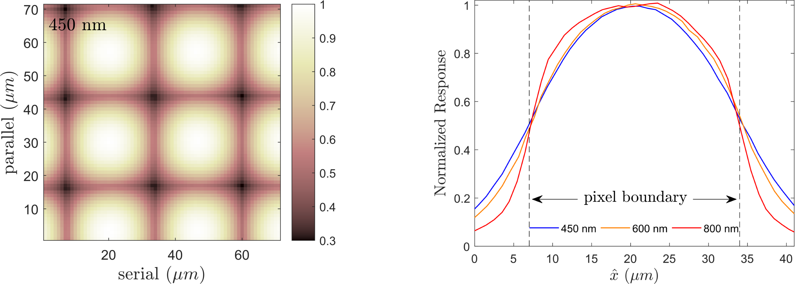

Researchers have recently characterized the Intra-Pixel Response Function (IPRF) of a Kepler flight spare CCD. Recent Center for Imaging Science PhD recipient Dmitry Vorobiev presented the study at the SPIE meeting on Astronomical Telescopes and Instrumentation in Austin, Texas in June 2018. The findings are posted on ArXiV and will appear in the upcoming Proceedings of the SPIE.
The Intra-Pixel Response Function is the mapping of detector sensitivity within a pixel boundary. The IPRF imbues significant flux deficits and excesses as spacecraft-induced motion drags celestial photo-centers within a pixel. These conspicuous instrumental flux changes dominate the variance of K2 aperture photometry. Several detrending algorithms account for these sawtooth-like artifacts in the flux time series. The lab-based measurement of the IPRF will enable forward-modeling approaches such as Point Spread Function (PSF) photometry, needed for precision photometry in high stellar density fields. Alternatively, quantifying this sub-pixel flat field can enhance the fidelity of synthetic K2 photometry, which can inform the reliability of data-driven heuristic methods.
Mapping of the IPRF from in-situ K2 observations has been proposed. The new lab-based measurements offer both a clear signal of the characteristic doming structure and its wavelength-dependence.

Figure: Wavelength dependence of the Intra-Pixel Response Function from Vorobiev et al. 2018.